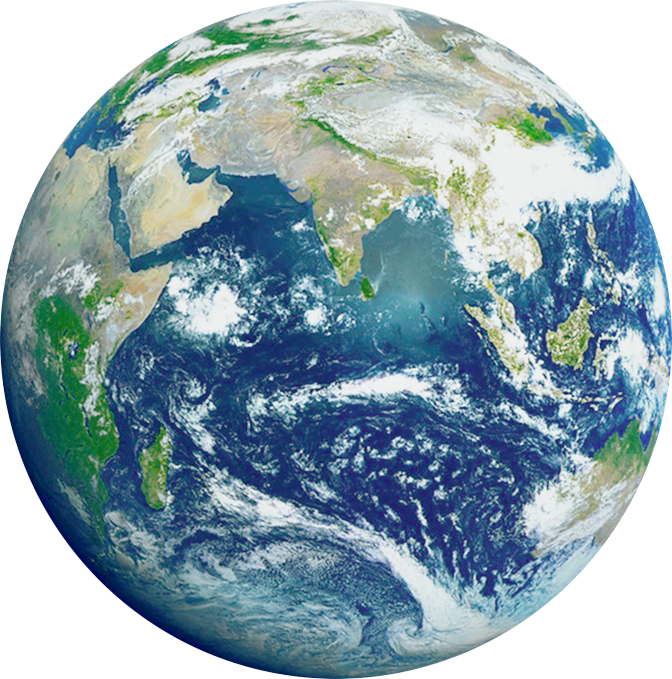

Mercury
- Mercury is the smallest planet in the Solar System and the closest to the Sun. Its orbit around the Sun takes 87.97 Earth days, the shortest of all the Sun's planets.
- It is named after the Roman god Mercurius (Mercury), god of commerce, messenger of the gods, and mediator between gods and mortals, corresponding to the Greek god Hermes (Ἑρμῆς)
- Like Venus, Mercury orbits the Sun within Earth's orbit as an inferior planet, and its apparent distance from the Sun as viewed from Earth never exceeds 28°.
Venus
- Venus is the second planet from the Sun. It is named after the Roman goddess of love and beauty.
- As the brightest natural object in Earth's night sky after the Moon, Venus can cast shadows and can be, on rare occasions, visible to the naked eye in broad daylight.
- Venus lies within Earth's orbit, and so never appears to venture far from the Sun, either setting in the west just after dusk or rising in the east a little while before dawn.
- Venus orbits the Sun every 224.7 Earth days.

Earth
- Earth is the third planet from the Sun and the only astronomical object known to harbor and support life. About 29.2% of Earth's surface is land consisting of continents and islands.
- The remaining 70.8% is covered with water, mostly by oceans, seas, gulfs, and other salt-water bodies, but also by lakes, rivers, and other freshwater, which together constitute the hydrosphere.
- Much of Earth's polar regions are covered in ice.
- Earth's outer layer is divided into several rigid tectonic plates that migrate across the surface over many millions of years, while its interior remains active with a solid iron inner core, a liquid outer core that generates Earth's magnetic field, and a convective mantle that drives plate tectonics.

Mars
- Mars is the fourth planet from the Sun and the second-smallest planet in the Solar System, being larger than only Mercury.
- In English, Mars carries the name of the Roman god of war and is often referred to as the "Red Planet".
- The latter refers to the effect of the iron oxide prevalent on Mars's surface, which gives it a reddish appearance distinctive among the astronomical bodies visible to the naked eye.
- Mars is a terrestrial planet with a thin atmosphere, with surface features reminiscent of the impact craters of the Moon and the valleys, deserts and polar ice caps of Earth.
Jupiter
- Jupiter is the fifth planet from the Sun and the largest in the Solar System. It is a gas giant with a mass (more than) two and a half times that of all the other planets in the Solar System combined, but (a little) less than one-thousandth the mass of the Sun.
- Jupiter is the third-brightest natural object in the Earth's night sky after the Moon and Venus.
- It has been observed since pre-historic times and is named after the Roman god Jupiter, the king of the gods, because of its massive size.
Saturn
- Saturn is the sixth planet from the Sun and the second-largest in the Solar System, after Jupiter.
- It is a gas giant with an average radius of about nine and a half times that of Earth.[22][23] It only has one-eighth the average density of Earth;
- However, with its larger volume, Saturn is over 95 times more massive.[24][25][26] Saturn is named after the Roman god of wealth and agriculture; its astronomical symbol (♄) represents the god's sickle
Uranus
- Uranus is the seventh planet from the Sun. Its name is a reference to the Greek god of the sky, Uranus, who, according to Greek mythology, was the great-grandfather of Ares (Mars), grandfather of Zeus (Jupiter) and father of Cronus (Saturn).
- It has the third-largest planetary radius and fourth-largest planetary mass in the Solar System. Uranus is similar in composition to Neptune, and both have bulk chemical compositions which differ from that of the larger gas giants Jupiter and Saturn.
- For this reason, scientists often classify Uranus and Neptune as "ice giants" to distinguish them from the other giant planets.